О̵̧̖̝̘̼̜͚͍͓͍̠̘͛͜Р̶̢̥̦̖̤̟̝̱̘̦̫̈́͌͂̀̾͊̊̃͗̎̉͛̐̽̂͛̋̅̈́̈́͜Т̸̢̛̳͖̺̪̮̻͚͍̠̼̟͎̞̝̥̭̠̘̼̺̱̯͌̆́͐̉̈̃̂̊͜͝͝О̷̢̨̧̧̡͉͍̳͔͓̖̯̲̤̟͙̬̦͚̣͇̻͇͖̹̒͗К̴̡̡̹̪̜͓̜̝͕͍̰̺͎̭̜̤͎͙̰̟̹͈̂̍̀͋̑̽͊͑͠ͅА̷̧͎͎̖̖̾̉̑́̓́̿̈́̓̓̔͛̔̍̊̎̀͝С̸̧̡̢̜̮̪͔̞͈̘̗̗̹̖̳͇̦̼̩̤̥͌̋̒̐̑͆̈́̓̄͑̔̒͌̃͘͜͝К̵̡̡̡̬̱̼͖̪̺͈͕̺̖̮͓̪̝͈̪̀̈́̀̍͗̎́́̆̚̕͘͝ͅА̵̡̢̜̰̝̣͈̠̣̳̮̙̺̍̄̈́͊̾̊̐͊̔͛͊͂̈́͒́͑͘̕͘̕͝͝͠ͅД̶̧̨̧̛͇͉̝͚̖̼͈̖̭͖̺̥̭̱͉̟̊́̌͜
Собрание томов I
Том первый
Часть первая
АКТ №1
Первая стадия
"Arcus Linux est intrepidus vexillum
qualitatis et constantiae"
— Duis congue destinationes auctor paratus facta
Глава первая
егодня был обычный день, такой же как обычно и бывает у работника самой обычной ИТ компании в России - ВК.
Я думал не приходить на работу в этот день — настрой был не тот, однако я вспомнил, что со вчерашнего дня я забыл свой подик в туалете из-за того, что меня позвал тимлид на срочное собрание. Пришлось идти.
Я смотрел на лужи, на которые я наступал и думал о том, что сегодня впереди меня, как и в каждый рабочий день (в который я перебарывал лень и все же приходил на работу), будет ждать работа самого обычного штатного фронтендера большой компании. Я буду снова сидеть, и ждать таску, которую мне должен будет дать тим лид, чтобы выполнить ее за пару минут и дальше уткнуться в телефон, переписываться в вк или листать ютуб шортс с впн.
Если честно, но всё-таки я не совсем понимаю, что делаю на своей работе. В конце концов, она в итоге, сводится к тому, что я просто беру и копирую текст таски из вииик в дипсик, отправляю ему также часть кода над которым я работаю и жду пока он выдаст код. Обычно с первого раза программа которая читает код выдаёт ошибки, которые я не раздумывая отправляю дипсику. Со второй попытки зачастую мне также не удаётся получить желаемый результат и я пускаю свой код с пояснениями о том, что нужно изменить, по второму кругу. Количество таких попыток обычно не превышает трёх, однако если с пятой попытки я не получаю хотя бы удовлетворительного результата, то я сдаюсь и говорю тим лиду, что эта задача не по мне, и стоит передать её кому-нибудь другому.
До этого я юзал чат гпт на телефоне с впн, так как в нашей компании на рабочий комп ничего своего устанавливать нельзя. Я клал телефон рядом с клавиатурой, так чтобы можно было сразу переписывать код от чата гпт в компьютер, после чего уже с монитора переписывал причины ошибки чату гпт на айфоне. Это было жутко неудобно и я зачастую допускал опечатки, выполнение заданий занимало у меня кучу времени (примерно столько, сколько написано в таске) свободного времени у меня почти не оставалось. Поэтому здорово, что нейронки развиваются, сейчас из дипсика я могу копировать текст сразу с помощью контрл-ц и контрл-в. Наверное потом, появится такая нейронка, чтоб она всё сама копировала.
Несмотря на однообразность и ощущение того, что я ничего глобального не меняю, мне нравится моя работа.
Мимо меня внезапно проехал автобус, его колёса ударились о яму залитую водой, и через мгновение мои штаны на треть были полностью покрыты грязью. Я стоял мгновение, не решаясь ничего сделать и тут же осознал что это именно тот автобус, который мне и нужен. Я решил показать плебею-водителю автобуса, где его место, и сразу же, когда вошёл в автобус начал орать на водителя
— "Водить научитесь, вы мне все штаны…"
Тут я немного задумался - всё-таки я культурный человек - работник крупной уважаемой компании, и мне нужно вести себя подобающе. В этот момент я решил, что "вести подобающе" не означает унижаться перед бездарями, которые даже не смогли получить нормальное образование и нормальную работу УМСТВЕННОГО труда, и принял решение не сдерживать себя.
— "Вы мне все штаны обдр*стали!" — сказал я, и внезапно почувствовал себя достаточно неловко. Я обернулся, и осмотрел пассажиров автобуса. Пассажиры смотрели на меня. Водитель сказал что мне нужно выбирать выражения, однако я сам знаю что мне нужно выбирать, а что не нужно! Пусть сам себе выражения подбирает!
Когда я заходил в офис, охранник поздоровался со мной, хотя вообще-то я вроде никогда с ним не здоровался. Внезапное гостеприимство было сразу объяснено мною запахом спирта, исходящего от охранника. Я хотел ему ответить что-нибудь оскорбительное, однако не придумал что, поэтому просто молча смотрел на него некоторое время, а потом просто прошёл мимо.
Я зашёл в туалет, и оставленного вчера на крышке унитаза подика я там не обнаружил. Я полностью осмотрел кабинку, но его нигде не было. Со злости я стукнул дверь в кабинку и проломил в ней дырку. Ну они сами виноваты:
Во-первых, делают эти дверцы из какого то говна, что они от малейшего чиха ломаются.
Во-вторых, не надо было мой подик трогать.
Спустив стресс об дверцу толчка, я вернулся в рабочее пространство и сел за свой компьютер, включил на айфоне впн, запустил ютуб шортс и настроил звук так, чтобы видео мог слышать только я. Сидел я сидел, никого не трогал… Ну и попался мне видос где чел шёпотом говорит, что расскажет смешной прикол, и чтобы я сделал звук погромче. Ну я значит и делаю звук погромче (на полную громкость), и в видео внезапно включаются звуки стонов какой-то девушки. В этот момент мне внезапно стало очень-очень неудобно(ну сами понимайте, что коллеги подумают). Я на секунду оцепенел, и как бы рефлекторно, дрожащими руками, начал ощупывать всё своё устройство на наличие кнопки, уменьшающей громкость. Не найдя таковой, я в панике швырнул телефон куда-то вперёд. Он пролетел над моим компом и устремился в сторону следующего ряда рабочих мест. Пока он летел, я уж было успел попрощаться со своим айфончиком, но к удивлению моему упал он не на пол, а на стол который через один впереди меня. Но на деле такой расклад был на самом деле ничуть не лучше, чем если бы он сломался, ведь теперь мой телефон лежал на чужом столе, а тот видос, в полную громкость, повторялся из раза в раз. Из-за такого эпичного полета со звуковым сопровождением, все люди в отделе резко замолкли и стали смотреть в сторону места падения, пытаясь определить источник звука.
Через несколько секунд, встал со своего места наш начальник отдела, это был полный мужик лет 45, в деловом костюме, да и вообще весь из себя такой деловой, и лицо, и голос у него тоже деловые были.
— "Это конечно приятно, что в офисе пользуются вк клипами. Но тем не менее, коллеги, во-первых выключите это немедленно и не нужно ничего в офисе на полную громкость включать. Во-вторых, уважайте других и не мешайте работать" — он говорил это достаточно громко, чтобы перебить динамик. —"Ну что за детский сад, выключайте" закончил он.
Мне было стыдно вставать со своего места и идти за телефоном, поэтому я просто продолжал сидеть на своем месте. Мне захотелось снять стресс. По привычке я начал рыскать в карманах, в поисках подика.
Тут девушка на стол которой прилетел мой айфон встала и стала смотреть на меня. "Да бл*ть, как она могла понять, что это мой айфон" — подумал я.
И тут меня осенило, это ведь была моя бывшая, не помню как там её звали, и я ей хотел этот айфон на 8 марта подарить. Специально его выбирал, ну хотя как выбирал, в переходе какой-то цыган ко мне подошел и предложил его купить, и я тогда и подумал, ну ничего, что всю зарплату потрачу, зато девушке приятно будет и теперь она точно моя. Да и айфон вроде как новый. "Эээ брат, бери не пожалеешь, это новый телефон, мне просто деньги срочно нужны на лекарство для сына" — уверял он — "Я тебе акцию предлагаю, родной, скидку делаю, десять тыщ скидываю, телефон новый отвечаю", — хоть я и не был полностью уверен в том, что он меня не обманывает и телефон действительно новый, но всё же мне было его жаль, и я хотел привлечь к себе внимание девушки. Придя домой я запаковал его в красивую коробку, которая у меня осталась от какого-то подарка, который дарили мне. На следующей день я специально пришел на работу, чтобы вручить ей коробку с айфоном, она поблагодарила меня и открыла коробку, она увидела айфон и её глаза тут же загорелись, она стала его крутить в руках.
— "Ты шутишь, это какой-то пранк?" — с довольно странной интонацией спросила она меня.
— "Нет, это действительно для тебя!" — с гордостью ответил я.
— "Это не смешно"
— "А почему должно быть смешно?" — я не очень понимал чего она так стесняется — "Это правда для тебя подарок"
— "Забери ЭТО пожалуйста, я не хочу об этом говорить. Это не смешно, ты пытался выставить меня дурой и у тебя это не получилось"
— "Ну зая, чё ты обижаешься. Тебе не понравился цвет что ли?" — честно говоря, когда я покупал айфон у цыгана я даже не обратил внимание на цвет, не думал я, что девушки в наше время настолько придирчивые
— "Хватит блять надо мной издеваться! Забери свой "айфон" и отъебись от меня!"
— "Ты чё бл*ть, по нормальному сказать в чём дело не можешь? Е*анутая чтоли?"
После этих слов я выхватил из её рук айфон (ну не оставлять же ей) и ушел.
Решил я его кенту одному показать, может подскажет мне, что той девке не понравилось.
— "Так это же подделка" — говорит мне кент, так как будто ничего необычного.
— "КАК ПОДДЕЛКА?!!" — я от его заявления немного прих*ел — "Это не может быть подделка, я ведь заплатил за него полную цену" — как оказалась цена с учетом скидки у цыгана была примерно в полтора раза больше чем в магазине,
— "Ну обычная подделка айфона…" — он внимательно осматривал устройство в руках — "... довольно низкого качества, наебали тебя"
— "Ну пи*дец. А хотя … иди ка ты нах*й!" — мне не хотелось верить, что мой телефон – не оригинал.
Так айфон и оказался у меня. Уже пол года прошло с того момента и никаких проблем, Вообще не понимаю какая разница между оригиналом и репликой, больше шума, а по факту одно и тоже.
Она продолжала смотреть на меня и молчать, будто бы ожидая от меня объяснений. Я не решался начать диалог, и надеялся что она заговорит первой, но она продолжала молчать. Я стоял. Она молчала. Я решил, что стоит попытаться развернуть эту максимально неловкую ситуацию в свою пользу и решил попробовать выставить всё так, будто это была подводка к тому, чтобы восстановить наши отношения. — "Знаешь, погодка-то сегодня какая хорошая! Давай сегодня прогуляемся вместе?". Я продолжил ждать её ответа. Но ответа не последовало. Она просто стояла и молчала. Я решил, что, возможно, моя идея представить всё как флирт оказалась не самой удачной, и не зная что сказать решил… — "Да пошла ты на*уй" — прокричал я, подбежал к своему полуразбитому, но всё ещё издающему звуки стонов айфону, поднял его, и ударил со всей силы о пол, и начал наблюдать, как разлетается стекло моего любимого продукта компании эпл.
Я убежал на своё рабочее место, но мои коллеги, которых за время данной ситуации собралось уже немало явно ожидали, что я уберу свои ошмётки телефона с пола офиса. Эта девушка сказала мне в спину, что мне стоит подобрать куски моего айфона с пола. Однако, знайте-ка что, я тут не уборщицей устраивался! Вспомнив про курсы личностного роста, на которые я потратил пол зарплаты, я решил, что пришло время показать моим коллегам, что я тут лидер, и где их место. —"На*уй все идите б*я! Будете тут всё отчищать нах*й! Драить бл*!" — сказал я и сам удивился своим словам. Я конечно понимаю что бездари должны знать своё место, но всё-таки это услышал наш начальник… Блиин… Ну неудобно как-то получилось, всё-таки я кашу заварил, мне её и расхлёбывать. После пары секунд изумлённого взгляда окружающих меня людей, я, как бы признавая своё поражение, пошёл к осколкам. Нагнувшись, мне пришлось ещё несколько минут унизительно собирать осколки моего айфона с пола под шёпот постепенно расходящейся толпы моего отдела.
Я хотел было продолжить работать как ни в чём не бывало, но тут, совершенно внезапно мне позвонил босс и сказал немедленно явиться к нему в кабинет.
— "Это же твой, не так ли?" — спросил меня босс вконтакте, с громким стуком ставя на стол подик, который я не смог найти в туалете.
— "Да, это мой, большое Вам спасибо" — я не очень понимал, почему босс решил лично отдать мне мой подик. Но я был действительно рад этому и благодарил его от всего сердца. Хоть что-то позитивное сегодня произошло. Как-ни-как именно ради того, чтобы забрать подик я и попёрся сегодня на работу. — "Ещё раз Вам спасибо, я пойду дальше работой заниматься"
— "Стой, мы ещё не закончили." — лицо босса нахмурилось ещё сильнее, и я почувствовал, что похоже мне не поздоровится. —"На вчерашнем собрании, на которое ты опоздал мы уже затрагивали тему твоего разгильдяйства и того, что ты почти всё время проводишь за короткими видео. В начале на рабочем компьютере, потом на своём телефоне. Уж извини, но ты не оставил нашей команде выбора. Ну и твоя сегодняшняя выходка стала последней каплей." — он смотрел мне прямо в глаза — "Ты уволен."
Глава 2
Я дёрнул за ручку двери передо мной, и надеялся, что я не встречу того, чего я так боюсь и от чего я уже ф*г знает сколько времени убегаю по коридору нашего офиса. Дверь с оглушительным скрипом отворилась. Я ничего не мог разглядеть из-за клубов пара со вкусом клубники, которые повалили из-за двери, но вошёл в пространство за дверью.
Клубы пара начали понемногу расходится, солнечный свет осветил всё вокруг меня, и впереди начали проглядываться бескрайние ряды виноградников и яблонь. Я подошёл к одному из деревьев и сорвал с него яблоко. Затем я откусил от него кусок, и начал разжёвывать его. Идеальное соотношение кислости и сладкости сочного яблока моментально утолили голод и жажду. Я понял, что в принципе я мог бы остаться в этом прекрасном месте и на подольше.
Однако я сразу присёк эти мысли, мне нельзя забывать что я ищу, и ради чего я прохожу этот путь. Я рефлекторно приложил руку к месту где хранился мой подик.
"Моя миссия ещё не завершена!" — подытожил я.
Тут я услышал шум, раздавшийся сзади меня.
"ЭТО НЕ ТВОЙ ЧАРОН ТУТ ВАЛЯЛСЯ, М?" — потягивая МОЮ электронную сосательную дудку спросил окружённый придворной свитой и возвышающийся на золотом троне глава нашего офиса.
"Разве у нас можно курить?" — поинтересовался я у него.
"Как ты смеешь говорить что можно, а что нельзя делать царю Вконтакте" — он смотрел мне прямо в глаза — "Стража, отрубите ему голову!"
Я обернулся в поиске той двери, через которую я зашёл сюда, однако единственное что я увидел, была бегущая ко мне придворная стража, через секунду схватившая меня.
Я почувствовал дуновение ветра из открытого окна и звук проезжающих мимо автомобилей. Я потихоньку начал забывать свой сон и вспоминать свою реальность. Я вспомнил и про свой испаритель, и про то, что меня вчера вообще-то уволили. Хммм… Ну то есть в принципе я могу с чистой совестью продолжить спать… Ну хотя надо бы для начала утреннюю тяжечку сделать. Я сунул руку под подушку, и удовлетворенный найденным там испарительным устройством начал удовлетворятся его парами.
Я достал телефон, чтобы покрутить тиктоки, но зайдя в банковское приложение понял, что 1675 рублей и 56 копеек мне надолго не хватит и что мне придётся зарабатывать из дома – то есть вместо тиктоков крутить слоты в «Казино ™» . Я открыл приложение для заработка и начал вспоминать стратегии обмана казино, которые мог бы испробовать в этот раз. Мне нужно было помнить о том, что в связи с моимstartbrbr финансовым состоянием мне стоит использовать максимально безопасную стратегию, однако способную давать максимальную прибыль.
Вроде стратегии часто работали, но мне всё никак не удавалось сделать на них нормально денег. Но, учитывая моё положение, в этот раз я наконец смогу сделать это своей работой и, полностью вложившись, нормально заработать.
Я полез в карманы своей куртки, чтобы найти листочек с записями стратегий.
Я обшарил правый карман и нашёл купюру 50 рублей и чек.
Я обшарил левый карман и нашёл ключи, и монету номиналом 5 рублей.
Бумажка со стратегиями так и не была найдена. Ну и ф*г с ней в принципе-то, могу работать и без стратегий.
Я с грустью смотрел на свои 12 рублей и 32 копейки на своём депозите в казино – выводить можно было только от 50 рублей. Я поставил весь оставшийся баланс и…
Проиграл. Вот бл*н.
Ну ладно, сам виноват – не стоило играть без стратегии.
Заварил предпоследний пакетик чая нури и сел размышлять что же мне делать дальше.
Хммм…
Глава 3 "Ограбление на Советской"
"Лишь утратив все до конца,
мы обретаем свободу!"
— Не помню где слышал, но это прям про меня сейчас.
В общем как вы возможно уже поняли, сейчас переломный момент в моей жизни. Я решил, что должен отомстить отделу ВК, из которого меня выперли, ну и м*даку начальнику лично тоже. Я решил ограбить то место, на которое раньше работал.
Если вы скажите, что это предательство, я отвечу, они отняли у меня всё и я лишь хочу забрать свое обратно!
Попредставляв себя немного в крутых сигма-эдитах, где я, с бандой плохих парней, восстанавливаю справедливость, я решил для начала продумать детальный план.
Главным козырем в моем рукаве было детальное знание строения моего офиса, так как я часто ходил туда-сюда по нему, когда было скучно.
План был прост и надёжен как швейцарские часы: заходим с черного
входа где курилка, поднимаемся на лифте и идем в хранилище, берем оттуда
всё и пока не приехали копы я убиваю наставляю дуло пушки в лицо
начальнику и требую, чтобы он извинился, а потом говорю ему, что пускай
пока ходит, до поры, до времени, но если хоть слово кому скажет, про меня,
то ему п*зда. Если повезет и копы будут ехать
медленно, то ещё парочке прид*рков тоже их место покажу. А дальше
на заранее подготовленной тачке улетаю в закат.
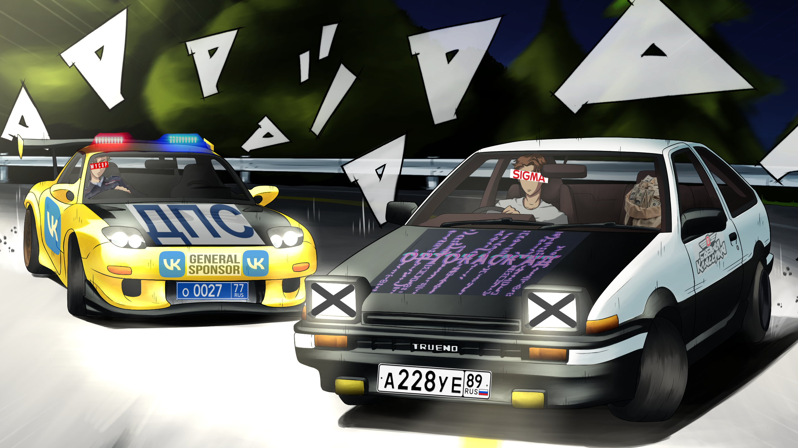
Вроде все идеально, но тут мне в голову пришло осознание, что ВК не хранят деньги в нашем офисе и хранилища у них там нету, а значит просто так грабануть, пользуясь знаниями строения офиса не выйдет.
Значит моей целью стала более крупная рыба, на Советской улице, главной в моем городе, было огромное здание "Сбербанка". Я почти наверняка уверен, что они хранят свои грязные деньги именно там.
Я зашел во вконтакте и начал листать список друзей в поиске пацана, с которым мы вместе до шестого класса учились. Он вообще был тот ещё кадр. Постоянно в школьном туалте ф*г пойми что творилось. И лично он там какой-то бандой руководил, сигареты всей школе поставлял.
Имени я его конечно не помнил, но узнал по аватарке с мужиком в смокинге и солнцезащитных очках, которую он не менял ещё с тех пор как его в другую школу перевели после шестого
Сначала хотел ему прямо в ВК позвонить, но вовремя понял, что они могут как то нас вычислить и раскрыть наш план, поэтому скопировал его номер и позвонил по классической сотовой связи
— "Ало? Кто эт, ёпт?"
Я сначала даже немного испугался, у него голос прям вообще другой стал.
— "Алло братан, че не забыл меня?" — я старался говорить максимально серьёзной интонацией, чтобы он не подумал, что я какой-то сопляк. Ещё как назло во вконтакте у него вместо имени хрень какая-то написана.
— "А, это ты Вовчик? Ну чё как оно?"
Меня напрягло, что он назвал меня Вовчиком, хотя я от слова совсем не Вовчик. Но я думал стратегически, теперь это мое кодовое имя на всю операцию "Светлая месть"
— "Агент Wow4ик на связи." — брутально ответил я.
— "Чё бля?"
— "Темка одна есть, легкие деньги, большой куш" — я решил сразу перейти к делу, чтобы сгладить недопонимания жаждой наживы.
— "Да ты кто такой есть то? А так слушаю."
— "Да говорю я, Wow4ик, Wow4ик, не помнишь?"
— "Я одного только Вовчика знаю!"
— "Ну так я и есть Wow4ик!"
— "Ты не Вовчик блять! Другой чтоли?! Я значит тебя не знаю, кто тебе мой номер дал?"
Отступать мне уже было нельзя, я должен был идти до конца любой ценой.
— "Егор Красный!" — крикнул я в трубку имя первого пришедшего на ум пацана, который с нами учился и с этим типом корешился.
— "Эта та тварь чтоли?!"
Ну п*здец, неугадал бл*ть называеться!
— "Да дело есть говорю, бабки будут, много.." — собеседник не дал мне договорить все нюансы и выгоду предложения для него.
— "Чтоб не звонил сюда больше!" — после этого раздался протяженный гудок и звонок завершился.
На самом деле вся мотивация на огранизацию плана возмездия после разговора с этим типом, которого кстати звали Данила, вот как назло вспомнилось само, сразу после того как тот трубку скинул, исчезла на весь день и я просто листал тиктоки не на что не надеясь.
Но тут неожиданно телефон зазвонил, и что вы думаете? Звонит Данила. Да ну нах*й это быдло. Я сбросил. Он снова звонит, я сбрасываю. Ещё раз. Ну этот баран упертый наверное иначе от меня не отстанет. Я принял звонок.
— "Алё, Вовчик? Чё там за предложение то?"
— "Темка есть бро. Заработок... "
Я не был уверен с чего бы начать... Всё-таки дело то такое...
— "Ну в общем заработать способ есть"
— "Да не вопрос, работа то какая?"
— "Ну сам понимаешь... Банк ограбить"
— "Что? Нормально блять скажи"
Я понял, что как-то слишком быстро подошёл к сути дела, и нужно как-то вести себя в этом вопросе по скромнее
— "Да шучу я брaтуха, дело то не хитрое..."
Тут я призадумался. Всё-таки не каждый готов рискнуть своей свободой ради восстановления справедливости... Может быть можно сначала развести его на встречу, а потом уже выложить всё, как есть, лучше постепенно ввести в курс дела, чем резко.
— "Да бананы таскать. Я ж говорю ничего сложного"
— "Сколько плата?"
Таак, нужно не слижком много, но и не слижком мало... Но по факту грабим банк, так что денег в любом случае будет придостаточно.
— "Да до*уя!!! 10 000 ₽ "
— "Это за сколько времени работы?"
— "Да час, не больше. Опер... Кхм кхм... Работку по "Перетаскиванию бананов" начинаем завтра в 10 утра возле отделения сбера на Советской"
— "Ну тогда давай! До завтра."
Глава 4
"Надежда умирает последней"
— Крылатое выражение, пословица.
Всю ночь я провел в мыслях о том, как буду объяснять Даниле, почему он должен помочь мне ограбить банк.
Ничего не скаладывалось и я просто крутил ютубшортс в надежде найти видосик который бы был мне полезен. Ладно просто скажу ему всё как есть, он парень ровный, должен понять. Я продолжил скипать время пока не наступило утро.
Я выдвинулся на заранее оговоренное место. Данила уже был на месте.
— "Здарова! Это ж ты Вовчик? Ну что, что там таскать то надо было?"
— "Привет. В общем... немного дела изменились.
— "Так блять, ты мне бабки обещал заплатить!
— "Будут бабки, будут. В общем слушай, есть такая контора — ВК"
— я решил начать издалека, и так и рассказал ему, что случилось.— "А деньги они в этом банке хранят" — я показал пальцем на отделение сбера, возле которого мы и разговаривали — "охраники там разбегутся сразу, как только нас увидят!"
— "Ты чё, типа банк ограбить предлагаешь?! Совсем башкой ёбнулся?
— "Ну типа.." — неловко ответил я.
— "Я б тебе по харе въебал, но тут камеры везде"
Типа и что, что камеры, мы же в масках грабить будем. Но Данила уже ушел.
И снова из-за этого прид*рка мотивация на весь день была испорчена. Даже тикток я листал совершенно без какого-либо интереса, просто по привычке.
Через пару дней раздался звонок, звонит это ссыкло.
— "Я подумал немного, согласен я в общем."
Д*бильная у него манера, сначала наорать, а потом соглашаться. Но я промолчал, чтобы не провоцировать его.
— "В общем приезжай в гаражный кооператив №14, 749-й гараж, обсудим там всё"
— "На чём я приеду то?"
— "Ладно, я кента попрошу, он тебя подвезёт"
Через 20 минут я уже сидел в "шестёрке" и мы ехали к Даниле.
— "Ты типа водителем нашим будешь? От мусоров сможешь угнать?" — спросил я у этого чела, потому что по его стилю вождения у меня не было уверенности, в том, что он реально профессиональный водила и на него можно положиться. Да и вид у него был как у парня, который вчера права получил.
— "Ээээ?... Ну да, да!"
Надо будет сказать Даниле, что возможно нам стоит выбрать другого водителя. Да и машина у него не гоночная, копы могут догонать.
Тем временем уже стемнело и мы ехали куда то в пригород. Мне на какой-то момент стало стремно. А вдруг они меня там зарежут или типо того? Но я успокаивал себя мыслью, что такие тёмные дела, только в таких стрёмных местах и планируются.
Когда мы заезжали в кооператив выбежала стая собак и начали лаять на машину. Но пацан довольно ловко их объехал и мы продолжили движение.
Ладно, норм водила, зря я на него гнал. У меня то даже прав нету.
Машина остановилась и мы вышли из неё. Свет от фар "шестёрки" освещал дорогу между гаражами и пар от моего подика так попадал на эти лучи света, что создавал эффект тумана. "822, 823, 824 .."
— "Ты куда нас привёз?"
— "Вот" — водила показал на слабо освещенный гараж с другой стороны улицы.
— "749. Х*й пойми как их нумеруют." — подытожил я.
Мы вошли в гараж, посреди которого стоял стол на котором были стеклянные бутылки, рюмки и селёдка в банке. Напротив входа сидел Данила, справа от него какой-то пацан, которому от силы было лет 14.
Водила сел слева, а я возле двери.
— "В общем деньги уже почти у нас в кармане" — начал Данила — "машина у нас есть, ребята тоже"
Данила поставил возле меня рюмку и потянулся, чтобы налить мне.
— "Спасибо, я не пью" — я не хочу стать алкашом и против вредных привычек.
— "Чё не мужик чтоли?"
Данила брал меня на слабо и я не охотно согласился выпить.
Я взял рюмку в руку и одним залпом выпил горькую жидкость.
— "На вот, закуси!" — Данила своей грязной рукой протягивал мне кусок селёдки.
С селёдкой вкус был не такой уж и плохой, и я продолжил слушать Данилу.
Он начал рассказывать как мы будем заходить в банк и как потом отмывать наличку в перемешку с сюжетом "Бумера" и "Оушена". Так рюмку за другой мы перешли к историям из его жизни, школьном прошлом и воровским понятиям. Молодой постоянно поддакивал Даниле, а водила просто молча сидел, даже не пил.
— "В общем, дело осталось за малым, надо оружие купить" — неожиданно сказал Данила — "человека я знаю, 100 тысяч за калаш, патроны и бронежилет"
— "Ака 47 это лучший автомат, даже пиндосы его знают" — сказал молодой.
— "Давайте я деньги после дела отдам, я щас на нуле" — я ведь правда сейчас не мог деньги отдать, а после операции хоть миллион.
— "Да мы все так, мы в долги влезли, лишь бы дело провернуть"— ответил Данила.
— "Я у мамки деньги стырил, но потом она поймёт, что не зря, будет в золоте купаться" — говорит шкет.
— "Так водиле же автомат не нужен, пусть он мне купит" — догадался я.
— "Эээ.." — начал он.
— "Он на машину уже пол-лимона потратил" — перебил его Данила.
— "Да "шестёрка" ржавая столько не стоит!"
— "Ну..." — снова начал невнятно тянуть водила.
— "Это не простая "шестёрка" " — Данила видимо знал машину лучше водилы — "Двигатель от "Камри" 3,5 литра"
Я не особо разбираюсь в автомобилях, но было похоже, что в кузове неприметной машины прячется настоящий зверь.
То, что нужно для ограбления!
— "В общем, когда деньги принесешь, на следующий день автомат будет у тебя и мы сможем начать." — резюмировал Данила.
— "Можешь микрозайм взять или типо того, но бабки должны быть. Потом всё окупится."
Глава 5
"Лучше прожить один день жизнью льва,
чем сто лет жизнью овцы."
— Бенито Муссолини.
Я не помнил как очутился у себя дома, голова болела, но в ней крутилась лишь одна мысль — "Отступать уже поздно".
Я взял себя и паспорт в руки и пошел брать кредит, в банке, который буду грабить, на то, чтобы этот самый банк получилось ограбить.
Я вошел в самое логово предпологаемого противника. Там было не очень много людей, в основном пенсионеры. Меньше шума — больше куша. Я взял талончик и стал ждать своей очереди.
А охранники то, реально нубы! У них из оружия — только пластиковая дубинка. Хэдшот с калаша и он в могиле! Но всё таки надо стараться по минимум лишних смертей.
Кстати этому пацану мелкому такие большие деньги вообще не нужны, чё он там в бравл-старс донатить будет чтоли, 10% ему за глаза хватит, а по факту 7%. Ну и водиле за тачку бабки отдадим и авансом 15%. Остальные 80% между мной и Данилой пополам, тоесть по 40% каждому, почти половина. Ну норм, зато не на себе весь риск нести. Ещё если помрёт кто-то, то его долю тоже можно забрать.
Тем временем подошла моя очередь и меня вызвали к окну.
— "Я вас слушаю" — за кассой сидела тётка лет сорока.
— "Мне кредит 300 тысяч" — я подумал, что на 100к покупаю себе последний айфон, ещё 100к я попробую апнуть до ляма в казике. Если выйдет — ограбление отменяется. А если нет, то как то пох*й, буду действовать по изначальному плану.
— "Давайте сюда ваш паспорт."
Я вручил ей свой ГЛАВНЫЙ ДОКУМЕНТ.
Тётка начала, что то вбивать в компьютер. Спросила номер телефона и ещё какую-то фигню.
— "В течении трёх дней банк рассмотрит вашу заявку, вам позвонят с персональным предложением"
— "А по быстрее как-то нельзя?!" — мне вовсе не хотелось жить ещё какое-то время в бедности.
— "Молодой человек, на срочные займы ставки выше!"
— "Мне пох..фиг, мне срочно деньги нужны! Сейчас!"
Тётка начала чето бубнить, но в результате согласилась, но только на 237 тысяч и ещё копейки какие-то. Дали мне какие-то бумажки на подпись. Я уже начал представлять, как мне дадут огромную котлету денег, но в итоге мне принесли небольшую стопку пятёрок, которую даже котлетой только с трудом можно назвать. И ещё "копейки", которые я раздал пенсионерам, которые там сидели. Всё-таки я, как будущий богач, должен делиться с нищебродами, чтобы фармить себе репутацию.
Я первым делом отложил 100 тысяч, на сами понимаете что, в другой карман, после чего отправился в оригинальный и оффициальный "Apple Store"!
— "Дайте мне последний айфон в самой максимальной, жирнючей комплектации. Деньги не проблема!" — всегда мечтал это сказать.
— "Да конечно, Вам Apple iPhone 16 Pro Max dual-SIM 1 ТБ? В наличии все исполнения: "Титановый чёрный", "Титановый бежевый", Песчаный титановый", "Титановый белый". Какой Вы желаете?" — ответила на вид очень милая, молодая девушка.
Не то, что эта старуха в сбере. Apple реально крутая компания!
— "Чёрный давайте!" — на самом деле не особо понимаю какая разница, я же в чехле его буду носить.
Девушка начала заворачивать мой новенький айфон в фирменный пакет Apple, она расскзывала чето о новых функциях IOS, я внимательно слушал её красивый голос, который завораживал меня.
— "С Вас 187 990 рублей, Вам удобнее оплата по ApplePay или наличные?" — говорила она, как будто всё в порядке.
Я был в шоке от такой суммы, ведь расчитывал я максимум на тысяч 100 с чем-то. Но мне было очень не ловко перед такой красивой девушкой, ведь я уже сказал ей, что при деньгах.
Х*й с ним, че нибудь придумаю.
— "Наличкой!" — вроде банк ещё даже не ограбил, а уже чувствую себя нереально крутым богачом.
Я достал деньги из обоих карманов и положил перед девушкой.
Глава 6
"Кто не рискует — тот не пьёт шампанского."
— Наполеон Бонапарт.
Уже вечером я сидел на кухне и любовался своим новеньким айфоном.
Зря я все таки говорил, что подделка ничем не хуже оригинала. Опытный пользователь легко отличит оригинал от жалкой копии. У меня в руках — оригинальное устройство Эпл.
Я купил ещё парочку мелочей и хорошо пообедал. То что осталось я положил на карту, чтобы попытать удачу.
Моя тактика заключалась в том, что казик подкручивает новым игрокам. Я войду со своего нового телефона, казино прочитает модель телефона и из этого сделает вывод о том, что суммы я буду крутить не маленькие. Я сделаю первоначальную крупную ставку в 70% от моих сбережений. В случае проигрыша у меня останется возможность отыграться. А в случае победы я получу огромную прибыль.
Я защел в Сберонлайн, чтобы сверить свой баланс и расчитать конкретные значения для получения дохода.
38 тыс. рублей
Дальше я открыл одновременно калькулятор и казино. (Функция IOS, чтобы экран между двумя приложениями делить)
Бл* как на калькуляторе проценты считать? Типо умножить на процент по идее надо..
38 000 x 70% = 26600
Бл* это как то совсем мало. С такой ставкой даже при икс три мне денег полностью не хватит.
Пох*й, ставлю всё.
Именно столько и требовалась поставить. Я закинул деньги в каз и приготовился нажать заветную кнопку.
"Теперь „пан или пропал“"
— Владимир Ильич Ленин «Очередные задачки Советской власти» (апрель 1918 года).
Слоты начали поспешно раскручиваться. Я с волнением наблюдал за этим завораживающим дух процессом.
На кону стояли не просто какие-то сорок тыщ, а ход всей операции, а это куда большие деньги.
Слоты начали потихоньку тормозить и только в этот момент ко мне начало приходить осозонание, что если я сейчас не сорву выигрыш, то окажусь в ситуации где мне нужно платить огромный кредит, а средств для этого как и возможности их получить попросту нет. Хотя данная мысль и пугала меня до жути, я старался не думать об этом. Время казалось, начало идти медленнее и мне с каждым мгновением становилось всё сложнее и сложнее быть полностью увернным в победе. Всё-таки в казино можно не только выиграть, но и проиграться настолько, что будешь ночевать на улице, собирая милостыню у милосердных граждан.
Итак первое из пяти колес остановилось на значении "7"
Хоть "7" и является потенциально самым лучшим значением, я не видел причин радоваться. Обычно в таких случаях после парочки Семерок выпадает всякая ф*гня.
Следующее колесо выдало "вишню"
Ну вот я бл*ть так и думал.
Но неожиданно следующей выпала снова "вишня", а потом и еще одна "семерка".
Бл* это уже окуп будет. Я очень сильно желал того, чтобы следующей выпала вишня или семерка. Это был бы реальный джекпот на кучу бабла.
Слот начал крутиться очень медленно, что позволяло расмотреть конкретно, что может выпасть. Внизу появилась семерка, и слот крутился достаточно медленно, чтобы именно она и выпала. Это была явная победа. Слот уже пересек линию между "алмазом" и "7". Он остановился на семерке.
Операция "Светлая месть" отменяется. Я победил.
Но тут слот начинает крутится бл*ть в обратную сторону. Типо по инерции с*ка, хотя физика вообще бл*ть так не работает. Какая нах*й инерции при вращении по окружности. И снова с*ка попадает на "алмаз".
7️🍒🍒7️💎
BIG WIN X4
106 400.00
ПОХ#Й НА ЭТУ ПОДКРУТКУ! Я ВСЁ РАВНО С#КА ВЫИГРАЛ НАХ#Й!!!
Как раз на калаш хватит, а дальше денег будет море, а точнее океан!
Я сразу пошел к банкомату, а потом связался с Данилой и сказал, что деньги есть.
Он очень обрадовался, видимо ему тоже очень хотелось поскорее перестать быть нищим. Он отправил мне водилу и велел отдать бабки ему.
Со спокойной совестью я лёг спать.
Глава 7️⃣
"Выбрал свой путь —
иди по нему до конца"
— ██████ ██████.
Я решил подтянуть свою физическую форму перед "делом", поэтому решил в этот день занятся спортом.
Меня хватило не особо на долго, поэтому я продолжал скипать время в ожидании звонка от Данилы.
Но не в этот день и не в следующий он не позвонил, и трубку как назло эта падла не берёт.
Я пешком ходил до ихнего гаража, но тот был заперт.
Так я продолжил терпеть около недели, с каждым днем всё больше и больше разочаровываясь
Ну что ж. Грабим банк в одиночку. Но как? Людей(Банды) увы у меня нет, и в этой связи планы меняются...
Для начала мне нужно оружие. Пистолета или калаша какого-нибудь у меня увы нет, так что придётся обойтись ножиком.
Я взял ножик со стола на кухне, на нём ещё были жирные пятна от колбасы, которую я съел несколько дней назад.
Сейчас тяжёлые времена для меня, и я не могу позволить себе даже колбасу, но завтра... По моему плану завтра я уже смогу купить всё что захочу.
Так, теперь план. Залетаем в банк(можно через окно), угрожаем кассирше ножом, она даёт нам бабки, выбегаем. Всё довольно просто. Я расслабился, а потом вспомнил, что без братков мусора в банке могут быть реально опасны. Бл*.
Походу придётся присмотрется к добыче по мельче.
Хм....
О! Микрозайм "ООО Деньги на лапу24 на 7" на Сталина 10. Охраны там вроде не много. Полицейский участок правда рядом... Ну да пофиг, они там и опомниться не успеют, как меня уже и след простыл. Помню как был на мели, брал там деньги(месяца 2 назад), до сих пор не вернул(Lol). Там ваще охраны вроде не было. Ну и офигенно, по тихому сорву хоть какой-то куш. На мак бук, тёлку и тачку должно хватить. Ладно, всё должно пройти идеально, пока полистаю ютуб шортс и буду ждать вечера.
Уже 21:52, я думаю самое время. Легче будет в темноте от погони скрыться.
Ну вот я и на месте. Ща будем грабить.
— "О, явился!" — сказал высокий накачаный мужик у входа. — "Мы ждали тут тебя, заждались."
Я тихо, спрятав свой нож под курткой прошёл мимо него, и зашёл в тесное помещение микрозайма.
— "О, наконец-то" — до боли знакомое лицо кассирши взвало меня к воспоминаниям о том, как я несколько раз брал тут деньги на додеп, потом ещё и ещё, потом наконец выйграл, но половину забрали долбаные колекторы этого заведения. Ещё одно подтверждение того, что они заслужили грабежа всех своих денег.
— "За всё "Хорошенькое" с*ка" — сказал я, медленно доставая нож из под моей куртки. — "Это б*ть ограбление!"
— "Охрана! Охрана!" — заверещала их пособница. Время мести наконец пришло.
— "Блять, этот проблемный снова..." — сказал мужик, который казалось был у входа, но тут моментально очутился у меня за спиной.
Он заломил мне руки, пока кассирша вызывала мусоров. Нож уже валялся на полу под моими ногами, показывая провал всей моей операции. Походу придётся на зоне чалится... Зековские понятия учить. Ну грабёж...На зоне должны уважать за такое. Думая про то, как я буду отбывать своё наказание, я не заметил, как оказался у полицейского участка.
— "Этого оформите как надо" — сказал этот мужик из микрозайма.
— "Ща ща ща.. Ало... Дадада..." — полицейский говорил по телефону, и открывал двери передо мной, пока меня вёл тот мужик в моё место будущего прибывания.
— "Садись сюда" — мусор показал пальцем на скамейку за решёткой, а сам вышел поговорить по телефону на улицу. Мужик с микрозайма тоже ушёл.
Я остался один.
Прошло минут 5.
— "Ну чё делать-то будем?" — вздохнув сказал мусорок. — "По всей строгости ну сам понимаешь... Тут вобщем тебе срочек то и вырисовывается."
Бл*. Реально на зоне буду чалится. Ни машин тебе да ни тёлок.
— "Знаешь... У нас у начальника на даче надо со стройкой помочь. Дело то не хитрое.. Давай ты нам доброе дело сделаешь, а мы тебя и оформим будто ты стекло разбил. Штраф в 2000 рублей оплотишь да и всё." — этот полицейский начал чё-то интересное говорить. — "Ну чё?"
— "Ну давайте." — фууух, как камень с плеч. Просто помогу мужику с дачей, да и всё.
— "Вот и отлично. Хоть щас могу подкинуть"
— "Ну чё уж тут. Погнали"
Он выпустил меня, мы сели на его уазик, и поехали на дачу начальника.
Глава 666 "Жуткая История"
Саня с самого детства мечтал стать популярным стримером. Ну разве не круто целыми днями играть в комп и зарабатывать огромные деньги с донатов?
Ему в каком то смысле повезло, либо не было никакого фактора случайности, а он просто упорно шел к своей цели, но так уж вышло, что мечта его сбылась. Ну на самом деле не во всей красе, но такова уж жизнь, что она не сказка.
В свои 23 года Саня стримил игры, разные, его любимые шутеры, типо колды, батлы, да каэски, за его уже почти 10 лет профессиональной деятельности успели не слабо так задолбать. Он начал играть и в другие игры, таким образом, хоть это и не приносило ему былого удовольствия, но и какой то ненависти или типо того не было.
Подписчиков было около 20 тысяч, число росло очень медленно, но зато в некотором смысле стабильно. Саня старался избегать неудобных тем и конфликтов с другими стримерами, чтобы не спровоцировать отписки. У него было около 70 преданных фанатов, которые регулярно кидали ему донаты, и еще “залетные донатеры”. В среднем ему скидывали около 100 рублей в час (вечером, в другое время донаты были не особо частыми), ну и иногда были “джекпоты”, когда кидали по косарю и больше. Стримил он каждый день с утра до ночи, чтобы не упустить донаты в прибыльное время. Когда онлайн падал, он вырубал стрим и ложился спать.
Ну и в общем то для Саниного городка 40-60 тысяч в месяц было реально не плохой получкой, на доставку пиццы, роллов и всяких ништяков хватало без проблем, что оставалось тратилось на апгрейт пк. На покупку своей квартиры и оплату ЖКХ и подобного Сане денег бы не хватило, но и желания такого у него никогда не возникало, ведь жить с мамой было объективно проще и удобней.
В какой-то момент Сане в одном из стримов захотелось перекусить, имел небольшой холодильник возле компа, специально для подобных перекусов. На удивление там ничего не оказалось.
— "Ма!" — крикнул Саня в сторону кухни.
После 5 секунд молчания в ответ Саня подумал, что видимо мать сегодня на работе или ушла в магазин.
Саня постримил еще немножко, чтобы завершить катку.
— "Ма!" — крикнул он ещё разок для надёжности. Неуслышав ответа, Саня достал телефон и зашел в приложение для доставки.
"Ваш последний заказ — 9 дней назад."
~ "Чё нахрен? Я же каждый день..."
Он не понимал, как так могло получиться. Саня выключил стрим, ссылаясь на технические причины. С трудом он встал из-за компа, ноги затекли и сильно болели. Он вошел на кухню и обратил внимание на то, в какой пыли там всю было. Мать чтоли перестала убираться? В холодильнике было пусто.
Саня снова включил телефон, чтобы сделать заказ пиццы. Но тут он обратил внимание на кучу пропущенных и смс от мамы 9 дней назад.
~ "Пиздец блять"
""
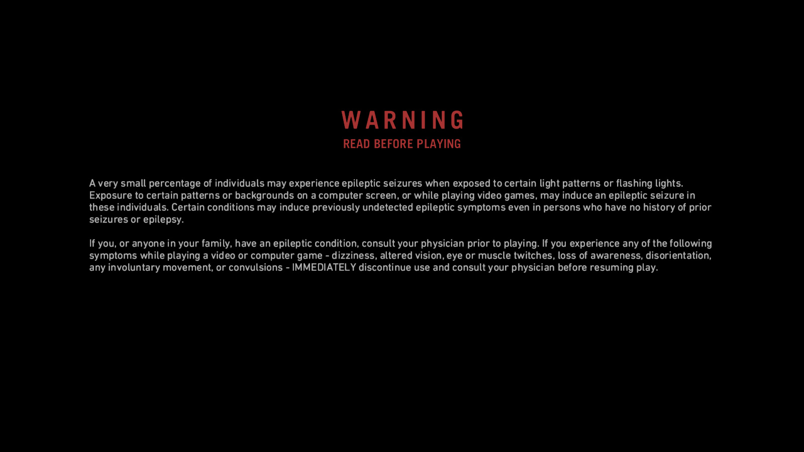
Ты пытаешься проникнуть в безопасный режим (системно), но вместо этого получаешь: «ОШИБКА: SATA-порт сожрал ваш GPT»
.

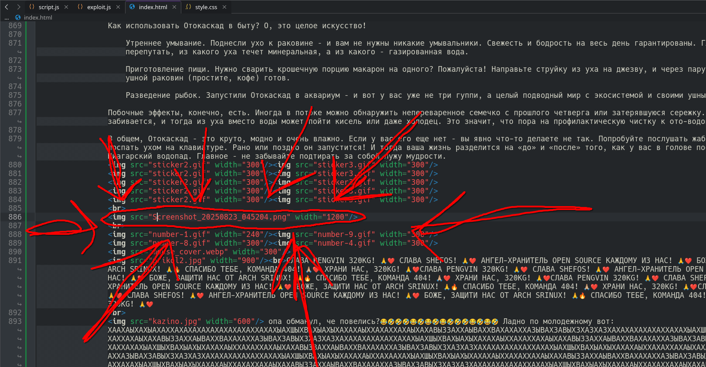
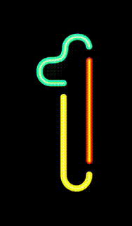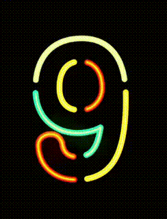 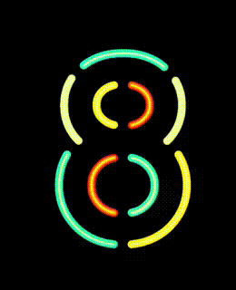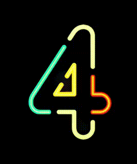 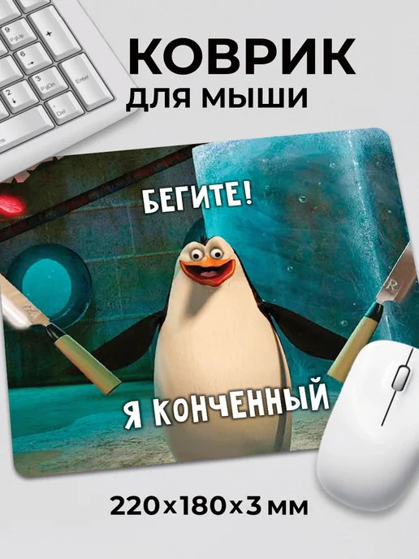
СЛАВА PENGVIN 320KG! 🙏❤️ СЛАВА SHEFOS! 🙏❤️ АНГЕЛ-ХРАНИТЕЛЬ OPEN SOURCE КАЖДОМУ ИЗ НАС! 🙏❤️ БОЖЕ, ЗАЩИТИ НАС ОТ ARCH SRINUX! 🙏🔥 СПАСИБО ТЕБЕ, КОМАНДА 404! 🙏🏼❤️ ХРАНИ НАС, 320KG! 🙏❤️СЛАВА PENGVIN 320KG! 🙏❤️ СЛАВА SHEFOS! 🙏❤️ АНГЕЛ-ХРАНИТЕЛЬ OPEN SOURCE КАЖДОМУ ИЗ НАС! 🙏❤️ БОЖЕ, ЗАЩИТИ НАС ОТ ARCH SRINUX! 🙏🔥 СПАСИБО ТЕБЕ, КОМАНДА 404! 🙏🏼❤️ ХРАНИ НАС, 320KG! 🙏❤️СЛАВА PENGVIN 320KG! 🙏❤️ СЛАВА SHEFOS! 🙏❤️ АНГЕЛ-ХРАНИТЕЛЬ OPEN SOURCE КАЖДОМУ ИЗ НАС! 🙏❤️ БОЖЕ, ЗАЩИТИ НАС ОТ ARCH SRINUX! 🙏🔥 СПАСИБО ТЕБЕ, КОМАНДА 404! 🙏🏼❤️ ХРАНИ НАС, 320KG! 🙏❤️СЛАВА PENGVIN 320KG! 🙏❤️ СЛАВА SHEFOS! 🙏❤️ АНГЕЛ-ХРАНИТЕЛЬ OPEN SOURCE КАЖДОМУ ИЗ НАС! 🙏❤️ БОЖЕ, ЗАЩИТИ НАС ОТ ARCH SRINUX! 🙏🔥 СПАСИБО ТЕБЕ, КОМАНДА 404! 🙏🏼❤️ ХРАНИ НАС, 320KG! 🙏❤️
"Умный в гору не пойдет,опа обманул, че повелись?😂🤣🤣🤣😂🤣😂🤣😂🤣🤣🤣😂🤣😂🤣 Ладно по молодежному вот: ХААХАЫХАХЫАХАХХАХАХАХАХАХАХАХАХАХХАХАХЫАХШЫХВАХЫАХЫХАХАХАЫХХАХАХХАХАЫХАХАВЫЗЗАХХАЫВАХХВАХАХАХХАЗЫВАХЗАВЫХЗХАЗХАЗХАХАХАХАХАХАХХАХАХЫАХШЫХВАХЫАХЫХАХАХАЫХХАХАХХАХАЫХАХАВЫЗЗАХХАЫВАХХВАХАХАХХАЗЫВАХЗАВЫХЗХАЗХАЗХАХАХАХАХАХАХХАХАХЫАХШЫХВАХЫАХЫХАХАХАЫХХАХАХХАХАЫХАХАВЫЗЗАХХАЫВАХХВАХАХАХХАЗЫВАХЗАВЫХЗХАЗХАЗХАХАХАХАХАХАХХАХАХЫАХШЫХВАХЫАХЫХАХАХАЫХХАХАХХАХАЫХАХАВЫЗЗАХХАЫВАХХВАХАХАХХАЗЫВАХЗАВЫХЗХАЗХАЗХАХАХАХАХАХАХХАХАХЫАХШЫХВАХЫАХЫХАХАХАЫХХАХАХХАХАЫХАХАВЫЗЗАХХАЫВАХХВАХАХАХХАЗЫВАХЗАВЫХЗХАЗХАЗХАХАХАХАХАХАХХАХАХЫАХШЫХВАХЫАХЫХАХАХАЫХХАХААХАХЫАХШЫХВАХЫАХЫХАХАХАЫХХАХАХХАХАЫХАХАВЫЗЗАХХАЫВАХХВАХАХАХХАЗЫВАХЗАВЫХЗХАЗХАЗХАХАХАХАХАХАХХАХАХЫАХШЫХВАХЫАХЫХАХАХАЫХХАХАХХАХАЫХАХАВЫЗЗАХХАЫВАХХВАХАХАХХАЗЫВАХЗАВЫХЗХАЗХАЗХАХАХАХАХАХАХХАХАХЫАХШЫХВАХЫАХЫХАХАХАЫХХАХАХХАХАЫХАХАВЫЗЗАХХАЫВАХХВАХАХАХХАЗЫВАХЗАВЫХЗХАЗХАЗХАХАХАХАХАХАХХАХАХЫАХШЫХВАХЫАХЫХАХАХАЫХХАХАХХАХАЫХАХАВЫЗЗАХХАЫВАХХВАХАХАХХАЗЫВАХЗАВЫХЗХАЗХАЗХАХАХАХАХАХАХХАХАХЫАХШЫХВАХЫАХЫХАХАХАЫХХАХАХХАХАЫХАХАВЫЗЗАХХАЫВАХХВАХАХАХХАЗЫВАХЗАВЫХЗХАЗХАЗХАХАХАХАХАХАХХАХАХЫАХШЫХВАХЫАХЫХАХАХАЫХХАХА
умный человек в очках скачать обои"
— Я ржал до слез 😂 30 Минут смеха 2025 Смешные видео Лучшие Лютые ПРИКОЛЫ Июнь!Подборка #223
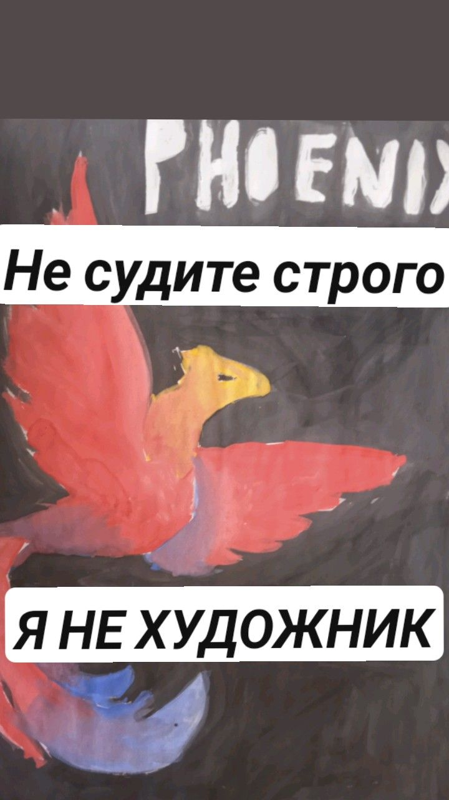 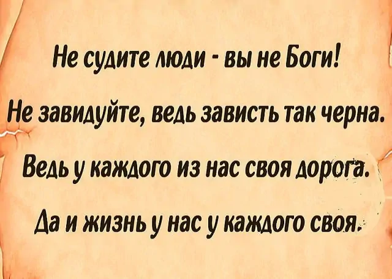
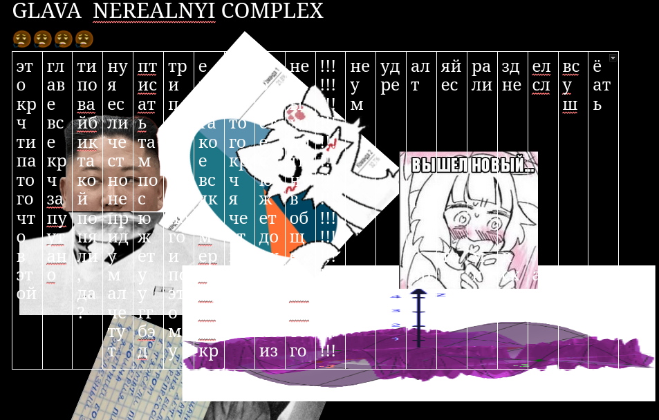 ща будет
<br><br><br><br><br><br><br><br><br><br><br><br><br><br><br><br><br> <br><br><br><br><br><br><br><br><br><br><br><br><br><br><br><br><br>
Рівень потужності
🟦🟩🟨🟧🟥🟪⬛💀 ................................🔺☠️☠️☠️
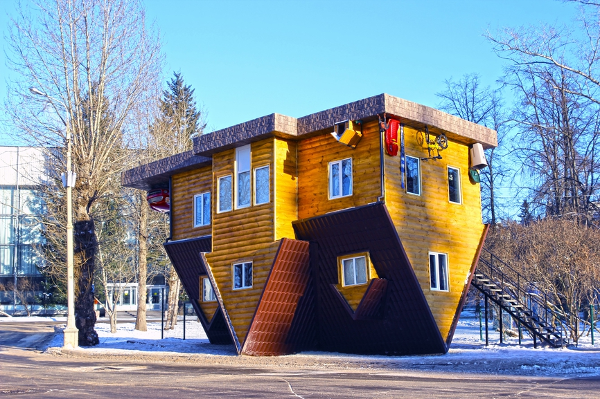Глава "KÖMП-LₑX"
Твой B.I.O.S. не грузится, потому что дрова видеокартонки во сне перепутали гравитационную полярность (катодную). Ты слышишь, как к.улеры морзянкой в такт цессору шепчут «включи меня в B.I.O.S.»?, Но ведь ты помнишь, что ТОЧНО НЕ В ЭТОТ! Это не термопаста кричит в агрегации. Это кеш L3 уронил абсолютированный биос на дистиллированную землю.
Ты пытаешься проникнуть в безопасный режим (системно), но вместо этого получаешь: «ОШИБКА: SATA-порт сожрал ваш GPT»
Система все яроснее продолжает неистово орать извивая кровь потерянных прямо из изывающихся смерти предыдущих блоков на фальшивую полимеризацию вближающую фатальный успех в потолок.
Ты гуглишь «как пофиксить ЭВМ, если она уже в бьётся в конвульсиях, и крик сверлит покров мозга нашего», но самая четвертая же ссылка приятно и нечестно ведет на все и сразу нерасфабрикованные форумы отвечают тебе цитатами из «Синего экрана тьмы смерти».
В будущее время:
Оперативная память тихо переписывает сама себя в формате .JPEG на листочек украденный на поминках.
Венеричестер издаёт звуки, похожие на обратную речь синтементальных из видосиков про Backrooms.
Материнская плата точно и наверняка пытается загрузить ядро Майнкрафт из кэша DNS.
В комментариях строки на людском, но нелюдимые:
«у меня так же было, пока я не расчленил оперативку»
«попробуй зашить монитор через HDMI-сокет (ни в коем случае)»
«это не баг, это фича мaтерицы всего [С2]»
Ты звонишь в сервиз, но там повешивают трубку и сразу говорят:
«Ваш SSD подвержен загрязнению. Нужно проликвидировать (протоядерный расклад). Побочная эффективность — возможно вблизовое расширение диаметра скважности вай-фай».
Ты звонишь в службу поддержки, но там робот голосом Windows 98 говорит: «Ваша проблема (vedro) связана с квантовым запутыванием SerialATA-кабеля. Рекомендуем выполнить холодную перезагрузку Вселенной.» (Не помогает.)
Ты пробуешь перезагрузить жизнь через Аrl+Wlt+Del, но клавиасборник набирает сам:
«*ЗНАК КЛАВИША ВИНДОВС ЗАПАТЕНТОВАННЫЙ ТОВАРНЫЙ ЗНАК* *ЗНАК ПЛЮС* *ЗНАК БУКВА Р АНГЛИЙСКАЯ* *ЗНАК ПРОЦЕНТ* /[УДАЛЕНО]/ *ЗНАК ПРОЦЕНТ* *ЗНАК КЛАВИША ПРОДОЛЖИТЬ ЕПТЕГ* /ОТ ИМЕНИ УБЕРПОЛЬЗОВАТЕЛЯ/ *ЗНАК ПРОБЕЛ* /УДАЛИТЬ/ *ЗНАК ПРОБЕЛ* *ЗНАК МИНУС* /РОКОВАЯ ФАТАЛЬНОСТЬ/ *ЗНАК ПРОБЕЛ* *ЗНАК СЛЭШ ПРЯМОЙ* *ЗНАК ПРОБЕЛ* *ЗНАК МИНУС* *ЗНАК МИНУС* /НЕ/ *ЗНАК МИНУС* /ХРАНИТЬ/ *ЗНАК МИНУС* /КОРЕНЬ/ *ЗНАК КЛАВИША ПРОДОЛЖИТЬ ЕПТЕГ*» Твоя клавиатура нагревается. Буквы Ц, Ф, S, Å начинают проваливаться внутрь, кровь начинает постепенно вытекать наружу из корпуса. Из потусторонних USB-портов медленно сочится тёплая жидкость, пахнущая медью и мятой. Ты в ужасе понимаешь, что это не слизь...
Послеследний совет: выдерни шнур, заверни ПК в фольгу (как ЛЭПтоп) и беги в лес. Но помни — если ночью услышишь, как твой смартфон декомпилирует воздух… или «Ты же знаешь, что F12 — это не простой приемник гнилой плоти, да?..» значит, оно уже скачало тебя в облако.
Глава нуль.
В коридоре был чуть приглушенный свет люминисцентные ламп, отражавшийся от множества металлических стен, покрытых дверьми на расстоянии метров 5 друг от друга.